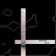

Album: The Rift
Lyrics by: Jason St-Cyr
Music by: Ryan Lindsay
Performed by: Soul Harvest
Recorded: August 19, 1999 at Distortion Studios in Ottawa, Ontario

|
Clip [N/A]
|

|
Download [N/A]
|
|

|
CD INFO
|
|
Lyrics and Story
"Another rage, she never screams, good little girl.
And the darkness hides the bruises on her arms.
But she won't ask for help, she's seen better days."
One of the first songs brought to Soul Harvest by Ryan Lindsay, the music is a balance of rock and pop which reminds many of the musical styles of bands like Collective Soul and Smashing Pumpkins. This track is available on the 1999 album "The Rift" which can be purchased through the band or on mp3.com.
|